360-DIGITAL · Кейс · медицина
Кейс 360-DIGITAL о продвижении МРТ-клиники на Яндекс Картах
360-DIGITAL360-digital.ru
360-DIGITAL — агентство геомаркетинга. Упаковывает карточки компаний в Яндекс Картах, 2ГИС и Google Maps, выстраивает сбор отзывов и управление репутацией, ведёт рекламу в Яндекс Бизнесе. Работает с медициной, фитнесом, ресторанами и автосервисами.
- Площадка
- Сайт агентства 360-DIGITAL
- Формат
- Кейс с таблицами и скриншотами
- Год
- 2025
Для агентства геомаркетинга 360-DIGITAL подготовила два кейса и экспертную статью для блога. Материалы показывают, как продвижение в Яндекс Картах влияет на поток клиентов локального бизнеса.
Задача
Показать на примере МРТ-клиники, как продвижение в Яндекс Картах увеличивает поток пациентов.
Решение
Построила кейс по схеме «было — что сделали — стало» и сверила все цифры с данными аналитики.
Результат
Рейтинг клиники вырос с 4,1 до 4,9, звонки — с 27 до 322 в месяц. За первый месяц кейс собрал 1,8 тыс. просмотров и 14 заявок на аудит.
Как мы снизили стоимость заявки до 129 рублей для МРТ-клиники в Москве и вывели карточку в ТОП Яндекс Карт
Кейс 360-DIGITAL: 500+ обращений в месяц с Яндекс Карт, 2ГИС и Google Maps. Рейтинг вырос с 4,1 до 4,9, заявка стоит 129 рублей — без накруток и поведенческих факторов.
Коротко о проекте:
- Ниша: медицина, диагностика (МРТ)
- Гео: Москва
- Старт работы: март 2024 года
- Каналы: Яндекс Карты, 2ГИС, Google Maps, медицинские агрегаторы
Ниже — весь путь проекта: от стартового аудита карточки до показателей десятого месяца работы.
Проблема клиента
В марте 2024 года к нам обратилась московская МРТ-клиника с типичной для медицины проблемой: с геосервисов приходило мало пациентов, а бренд почти никто не знал.
В клинике понимали, что Яндекс Карты приводят «тёплую» аудиторию — людей, которые уже ищут МРТ в своём районе. Но как выстроить работу с этим каналом, не знали.
Точка А: с чего начинали
Первым делом мы провели аудит карточки клиники и сняли стартовые показатели. Цифры оказались скромными даже для небольшого диагностического центра в Москве:
| Показатель | На старте |
|---|---|
| Рейтинг | 4,1 |
| Звонки в месяц | 27 |
| Построенные маршруты | 22 |
| Переходы на сайт | 26 |
| Всего обращений | ~75 в месяц |
| Стоимость заявки | не отслеживалась |
Около 75 целевых действий в месяц — это два-три обращения в день на всю клинику. Стоимость заявки никто не считал, поэтому оценить отдачу от канала было невозможно.
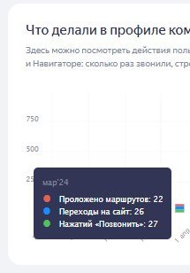
Дальше мы разобрались, почему карточка не работает. Причины нашлись сразу в нескольких местах: от рейтинга до пустых разделов.
Что выявили при аудите
Самой заметной проблемой был рейтинг. При выборе клиники люди внимательно читают отзывы, и оценка ниже 4,5 доверия не вызывает: пользователь просто листает выдачу дальше.
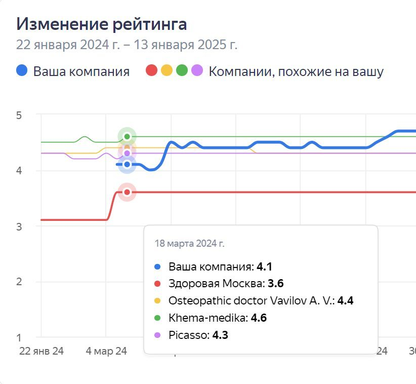
Но рейтинг был не единственной бедой. Полный список того, что тормозило карточку, выглядел так:
- Рейтинг 4,1 отпугивал пациентов. Клиника проигрывала соседям по выдаче ещё до того, как человек открывал карточку.
- Карточка не была оптимизирована под запросы. В описании не было ключевых слов, по которым пациенты ищут МРТ в Москве, поэтому по важным запросам клиника просто не показывалась.
- С отзывами никто не работал системно. Негативные комментарии висели без ответов, а довольных пациентов не просили поделиться мнением.
- Оформление не выделяло клинику. Фотографии случайные, обложка стандартная, фирменного стиля нет.
- Возможности платформы не использовались. Раздел «Новости» пустовал, акции не публиковались, товары и услуги не были добавлены.
Каждый из этих пунктов по отдельности не критичен. Вместе они делали карточку невидимой и неубедительной — именно это и предстояло исправить.
Наш подход: система вместо разовых приёмов
Мы не используем накрутки и серые схемы. Задача — выстроить систему, которая даёт стабильный результат месяц за месяцем. Работу разбили на три этапа: сначала аудит и стратегия, затем упаковка карточки, потом масштабирование.
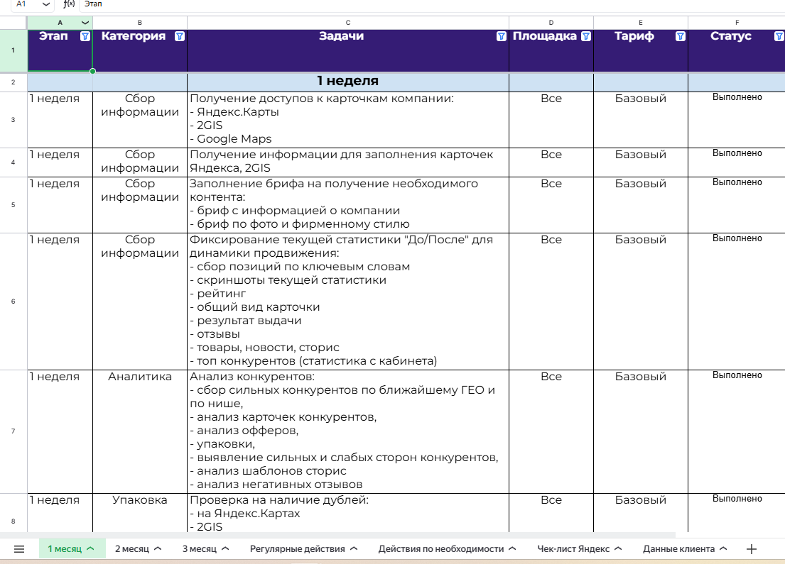
Такой порядок принципиален. Реклама, запущенная на неупакованную карточку с рейтингом 4,1, сжигает бюджет: люди кликают, видят оценку и уходят. Поэтому платное продвижение мы включили только на третьем месяце.
Этап 1. Аудит и стратегия
На старте мы глубоко изучили и саму карточку, и рынок вокруг неё. По итогам составили дорожную карту и расставили приоритеты на первые месяцы.
Аудит карточки
Проверили каждый элемент — от названия и категорий до фотографий и отзывов. Выписали все точки роста: получился список из 23 пунктов, которые требовали доработки.
Дорожная карта
Расписали работы по неделям и площадкам — Яндекс Карты, 2ГИС, Google Maps. У каждой задачи есть категория и статус, поэтому клиент в любой момент видит, на каком этапе проект.
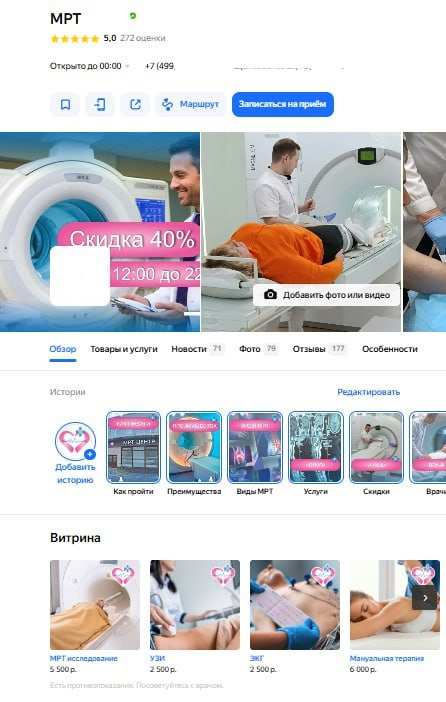
Дорожная карта стала общим рабочим документом: клиент видел не отчёт «по факту», а план, по которому можно сверяться каждую неделю.
Бриф
Созвонились с клиентом и разобрались в специфике клиники: какие услуги приоритетные, чем клиника отличается от конкурентов, какие акции готова запускать.
Анализ конкурентов
Изучили 12 ближайших конкурентов: рейтинги, УТП, рекламные кампании, отзывы. Выяснили, какие запросы они закрывают, а какие упускают, и нашли незанятые ниши, на которые можно сделать ставку.
Этап 2. Упаковка и SEO-оптимизация
Первый месяц ушёл на фундамент. Без него любая дальнейшая работа — реклама, отзывы, контент — даёт в разы меньшую отдачу.
Дизайн карточки
Сделали обложку с акцией, запустили истории — как пройти обследование, виды МРТ, скидки — и собрали витрину с ценами на исследования. Пациент видит главное на первом экране и может сразу записаться.
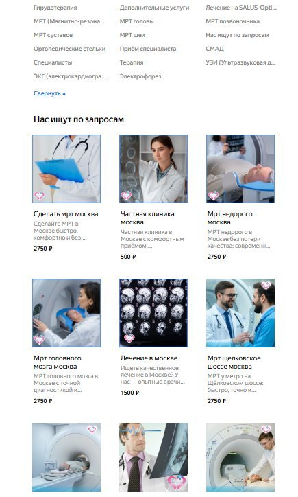
Визуал собрали в едином стиле, чтобы карточка выглядела как витрина серьёзной клиники, а не как случайный набор снимков с телефона.
SEO-оптимизация
Названия и описания услуг собрали по семантическому ядру: «МРТ головы», «МРТ позвоночника», «МРТ суставов» — именно так пациенты формулируют запрос в поиске.
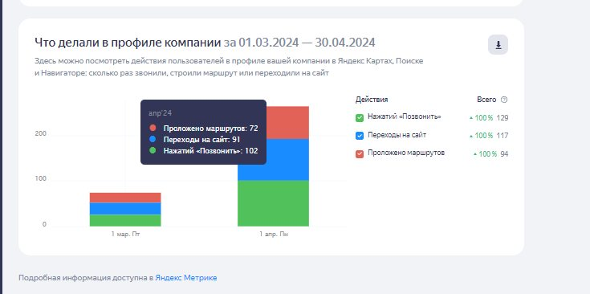
Теперь каждая позиция в витрине работает как отдельная точка входа: карточка показывается не только по общему «МРТ», но и по запросам на конкретные исследования.
Дубли карточек
Нашли две устаревшие карточки с неверной информацией и добились их удаления. Они размывали рейтинг и путали пользователей.
Аналитика
Подключили UTM-метки, настроили цели в Яндекс Метрике. Теперь мы видим не просто клики, а реальные конверсии: звонки, заявки, записи на приём.
Итог первого месяца
Уже в апреле, после базовой оптимизации, карточка принесла 265 целевых действий против 75 в марте — в 3,5 раза больше. Звонки выросли до 102, переходы на сайт — до 91, построенные маршруты — до 72.
Клиент увидел результат в первый же месяц — ещё до запуска рекламы и до роста рейтинга. Фундамент был готов, и мы перешли к масштабированию.
Этап 3. Масштабирование
Дальше работа пошла сразу по нескольким направлениям: рейтинг, контент, реклама, позиции, новые площадки и репутация за пределами карт.
Рейтинг: с 4,1 до 4,9
Для медицинской клиники рейтинг 4,1 — почти приговор: между клиникой с оценкой 4,1 и 4,8 пользователь выбирает не задумываясь. Мы поставили цель поднять рейтинг до 4,8+ без накруток и ботов.
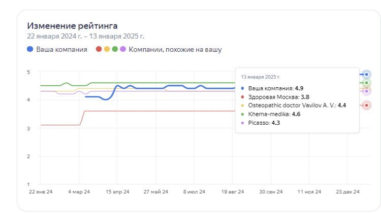
Цель перевыполнили: рейтинг дошёл до 4,9. Вот за счёт чего:
- Система сбора отзывов. После визита пациент получал SMS или сообщение в мессенджер с просьбой оценить приём. Довольные пациенты охотно делятся впечатлениями, если их вовремя попросить.
- Отзывы на месте. Администраторы собирали обратную связь в клинике и предлагали оставить отзыв по QR-коду — для этого сделали визитки, стилизованный баннер и настольную пирамидку. Такие отзывы проходят модерацию заметно чаще.
- Работа с негативом. На каждый негативный отзыв готовили развёрнутый ответ от лица клиники. Где возможно — решали проблему и просили пациента обновить оценку. Часть явно ложных отзывов удалось обжаловать через модерацию Яндекса.
- Мониторинг. Новые отзывы отслеживаем в реальном времени, на негатив отвечаем в течение 2 часов. Другие пользователи видят, что клиника реагирует на проблемы пациентов.
Все четыре инструмента работают одновременно, поэтому оценка 4,9 складывается из отзывов реальных пациентов, а не из разовых всплесков активности.
Контент-план и публикации
Раздел «Новости» в карточке Яндекс Карт — недооценённый инструмент: большинство компаний его игнорирует. При этом публикации повышают активность карточки и помогают позициям в выдаче.
Мы разработали контент-план на месяц вперёд: акции, полезные материалы про МРТ, новости клиники. Публикуем 3–4 поста в месяц, и каждый оптимизируем под поисковые запросы — это дополнительный трафик.
Реклама в Яндекс Бизнесе
На третьем месяце, когда карточка была упакована, а рейтинг подрос, запустили платное продвижение в Яндекс Бизнесе. Рекламу ведём по трём принципам:
- Постоянная оптимизация. Каждую неделю анализируем результаты, корректируем площадки показов, тестируем новые креативы.
- Геотаргетинг. Показы настроены в радиусе 5 км от клиники — это рабочая зона охвата для МРТ-центра.
- Приоритетные услуги. Усилили рекламу по высокомаржинальным направлениям: МРТ головного мозга, МРТ позвоночника, МРТ с контрастом.
За 463 дня рекламы карточка получила 12 735 целевых действий по 41 рублю и почти 10 тысяч целевых клиентов — по 53 рубля за каждого.
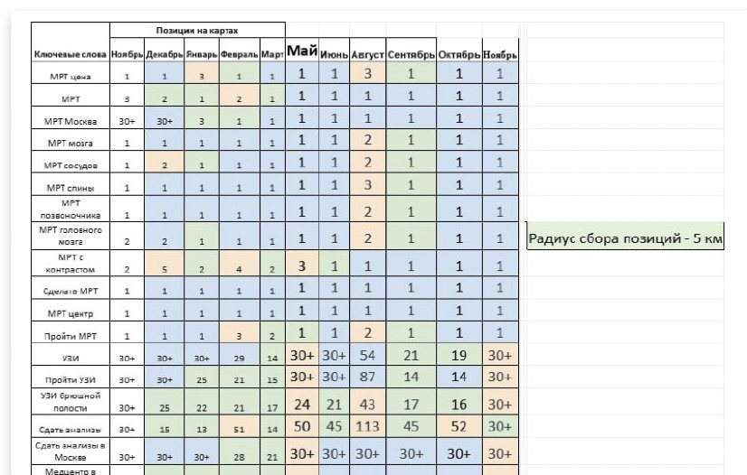
Больше всего действий приходится на звонки, переходы на сайт и построение маршрута из Карт — то есть на шаги, которые напрямую ведут к записи на обследование.
Позиции по ключевым запросам
Мы не гадаем, показывается карточка в поиске или нет. Специальный чекер ежедневно проверяет видимость по всем целевым запросам в радиусе 5 км.
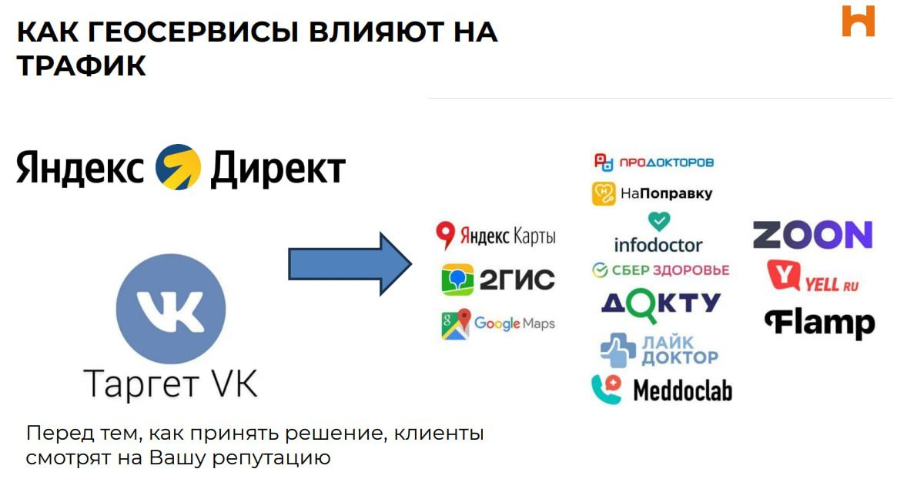
Если по запросу карточка опускается ниже ТОП-3, включаем набор мер:
- добавляем товары и услуги с нужными ключевыми словами;
- публикуем новости по теме запроса;
- прописываем SEO-данные и геотеги в фотографиях конкретной услуги;
- просим пациентов оставить отзыв именно об этой услуге;
- корректируем описание и добавляем синонимы запросов.
Так мы вышли на лидирующие позиции практически по всем целевым запросам. Львиная доля трафика теперь приходит из органического поиска, то есть клиника получает эти обращения бесплатно.
Новые каналы трафика
Яндекс Карты — не единственный источник пациентов. Вокруг них целая экосистема сервисов, и в каждом можно получить дополнительный трафик.
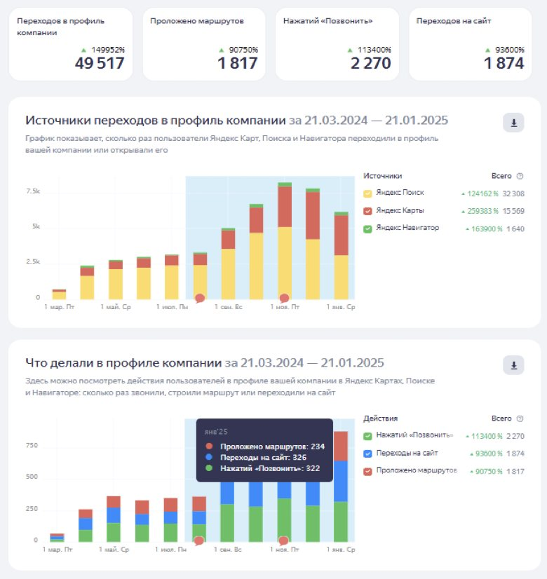
Помимо экосистемы Яндекса, мы подключили ещё три направления:
- 2ГИС — второй по популярности геосервис в России. Расширяет охват и приводит дополнительные заявки.
- Google Maps — аудитория меньше, но поток ощутимый, особенно среди пользователей iPhone.
- Медицинские агрегаторы — ПроДокторов, НаПоправку, СберЗдоровье, Zoon. Многие пациенты ищут МРТ именно там, сравнивая цены и отзывы.
Каждая площадка добавляет свою долю обращений, а вместе они снижают зависимость клиники от одного источника трафика.
Репутация за пределами карт (SERM)
SERM (Search Engine Reputation Management) — это управление репутацией бренда во всём интернете, а не только на картах. Перед записью пациенты часто ищут название клиники и читают отзывы на разных площадках.
Мы зарегистрировали клинику на всех значимых площадках с отзывами, настроили мониторинг упоминаний бренда и начали системно собирать отзывы везде, а не только в Яндекс Картах. Рейтинг на агрегаторах поднялся до 4,7+.
Аналитика и перераспределение бюджета
Принцип простой: усиливаем то, что работает. Если рекламная связка приносит заявки по 100 рублей — увеличиваем бюджет. Если канал не окупается — перераспределяем деньги.
Каждую неделю мы смотрим:
- количество обращений по каждому каналу;
- стоимость заявки и её динамику;
- позиции в выдаче по ключевым запросам;
- рейтинг и новые отзывы;
- поведение пользователей на сайте по данным Яндекс Метрики.
Благодаря этой рутине результат держится стабильно: ни один канал не работает «вслепую», а бюджет каждый месяц уходит туда, где заявка дешевле.
Точка Б: результаты
Все результаты получены белыми методами — без накруток и поведенческих факторов. Ниже — показатели за январь 2025 года, десятый месяц работы, в сравнении со стартом.
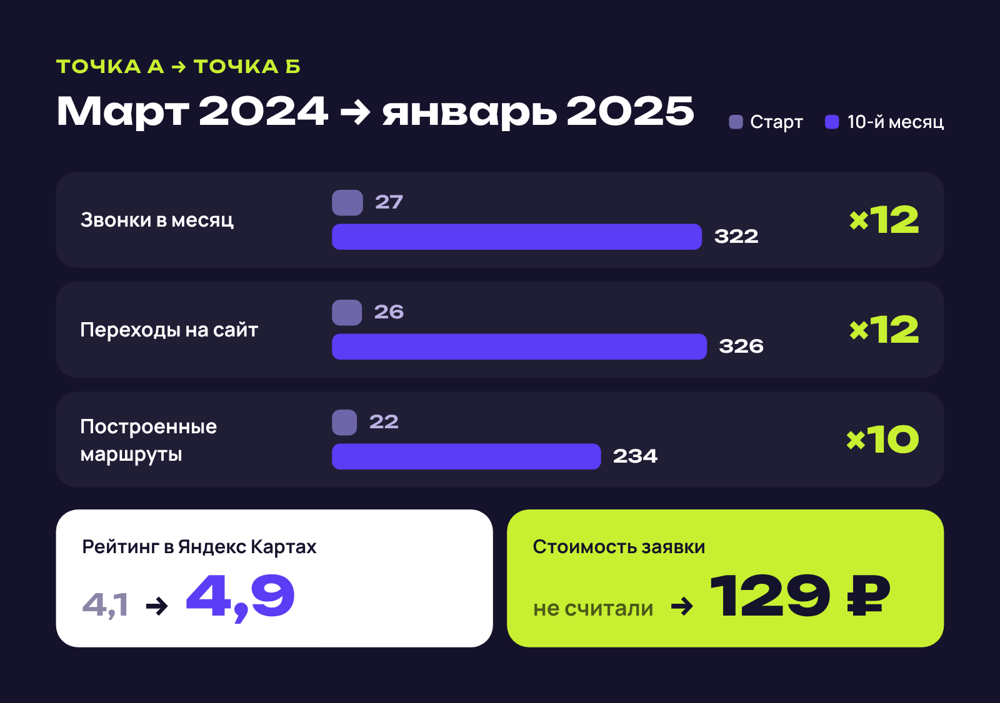
Звонков стало в 12 раз больше, построенных маршрутов — в 10 раз, переходов на сайт — в 12 раз. При этом каждая заявка обходится клинике в 129 рублей.
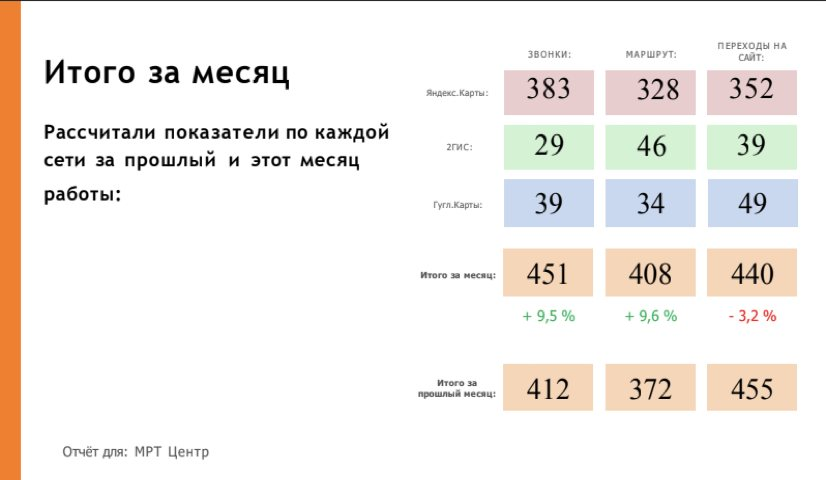
На графике хорошо видно, как менялась структура трафика: к Яндекс Поиску постепенно добавились Яндекс Карты, а их доля в переходах заметно выросла.
Откуда конверсия 26,9%
Мы отслеживаем каждую заявку до конкретного действия на сайте клиники. И здесь Яндекс Карты показали один из лучших результатов среди всех источников.
Из 1 001 перехода на сайт из Яндекс Карт 764 пришлись на новых уникальных посетителей. Они совершили 206 конверсий, среди них — звонки. В итоге 26,9% уникальных посетителей превратились в заявки.
Для ориентира: конверсию контекстной рекламы обычно оценивают в 3–7%, таргетированной — в 1–3%, SEO-трафика — в 2–5%. На этом фоне геосервисы выглядят одним из самых эффективных каналов для локального бизнеса.
Прозрачная отчётность
Каждый месяц клиент получает отчёт с разбивкой по каналам: видно, откуда пришли заявки — из Яндекс Карт, 2ГИС или Google Maps, — как меняется динамика и сколько стоит каждое обращение.
В декабрьском отчёте видно небольшое снижение переходов на сайт — это сезонный фактор перед Новым годом. Звонки и маршруты при этом продолжили расти.
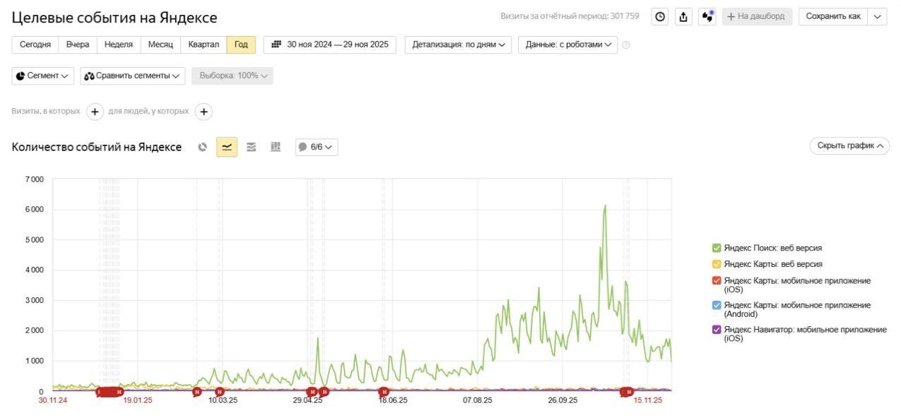
Годовой график показывает главное: эффект от работы накапливается. Число целевых событий растёт не скачком, а ступенями, и каждая новая ступень держится.
Почему геосервисы нужны локальному бизнесу
Яндекс Карты — канал вдолгую. Первые результаты часто видны уже в первый месяц, но настоящая отдача приходит, когда карточка «раскачивается», как сайт в SEO. Тогда клиника получает недорогих и качественных пациентов — по сути, аналог сарафанного радио, которому люди заранее доверяют.
Что даёт геомаркетинг:
- Низкая стоимость заявки — в этом кейсе 129 рублей.
- Высокая конверсия — до 27% посетителей становятся клиентами.
- «Тёплый» трафик — люди уже ищут услугу в своём районе.
- Накопительный эффект — результаты растут со временем.
- Независимость от блокировок — это не таргет в Instagram*.
Эти преимущества работают не только для медицины: те же механики подходят любому бизнесу, к которому клиенты приходят ногами.
Бесплатный аудит карточки
Мы проведём бесплатный аудит вашей карточки на Яндекс Картах и покажем точки роста. Вы получите:
- анализ текущего состояния карточки;
- сравнение с конкурентами в вашей нише;
- конкретные рекомендации по улучшению;
- прогноз роста обращений;
- персональный план продвижения.
Чтобы заказать аудит, напишите нам в Telegram — @360-digital. Пришлите ссылку на карточку (если она есть) и коротко расскажите о бизнесе — мы свяжемся с вами в течение 24 часов.
360-DIGITAL — агентство геомаркетинга. Выводим локальный бизнес в ТОП Яндекс Карт.
*Instagram принадлежит компании Meta, признанной экстремистской организацией и запрещённой на территории РФ.